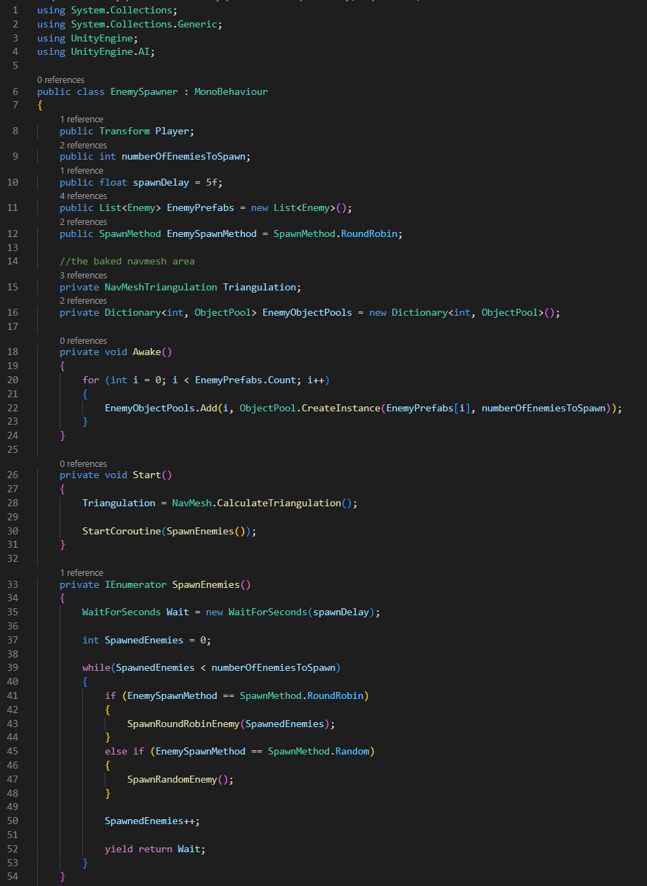
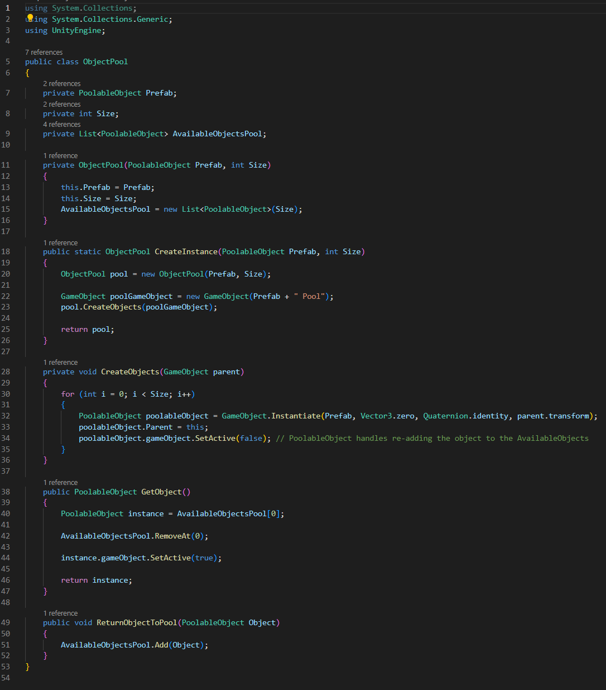
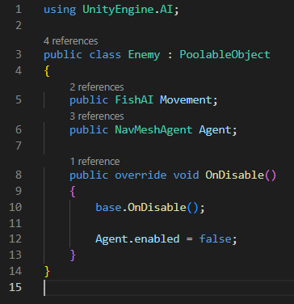
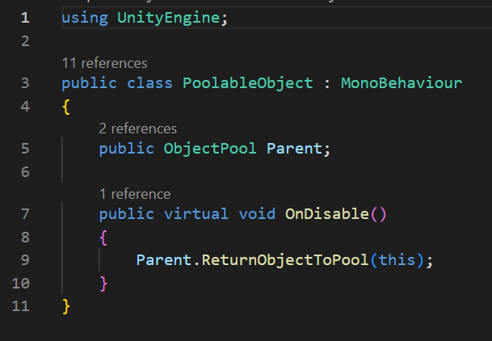
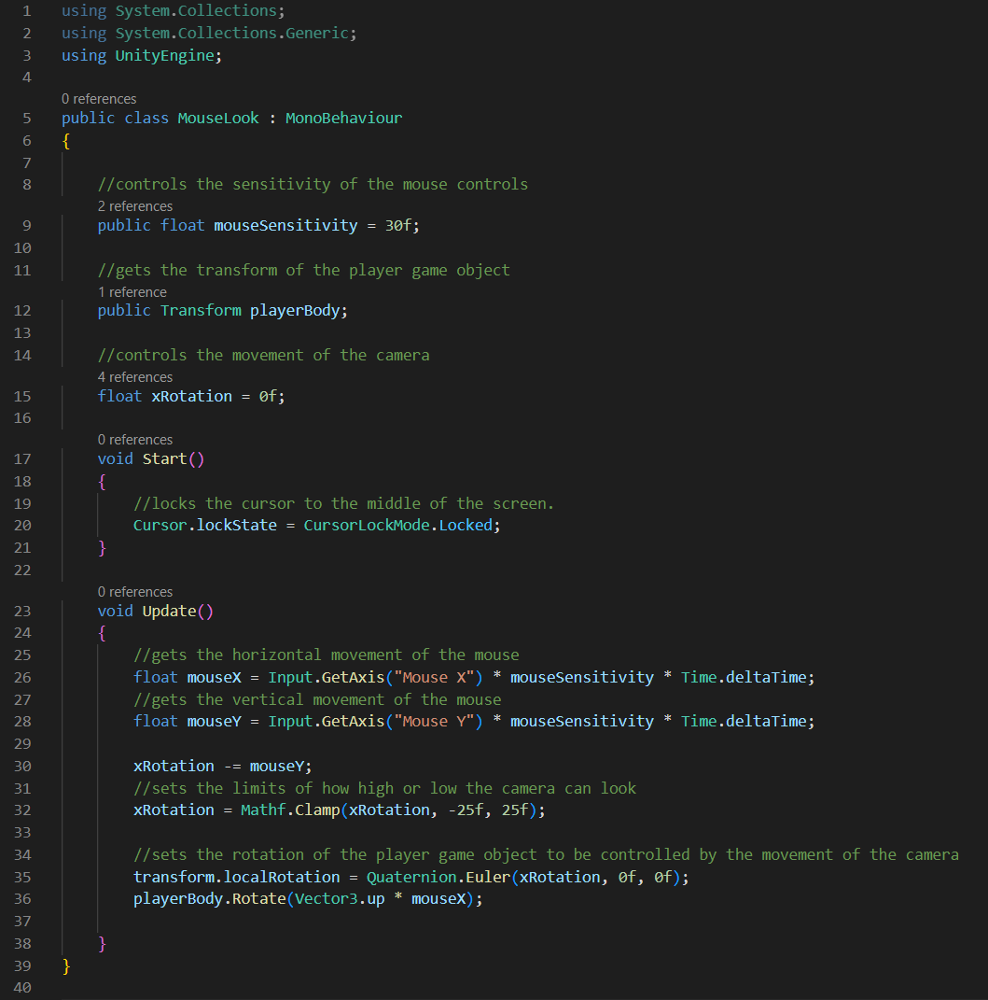
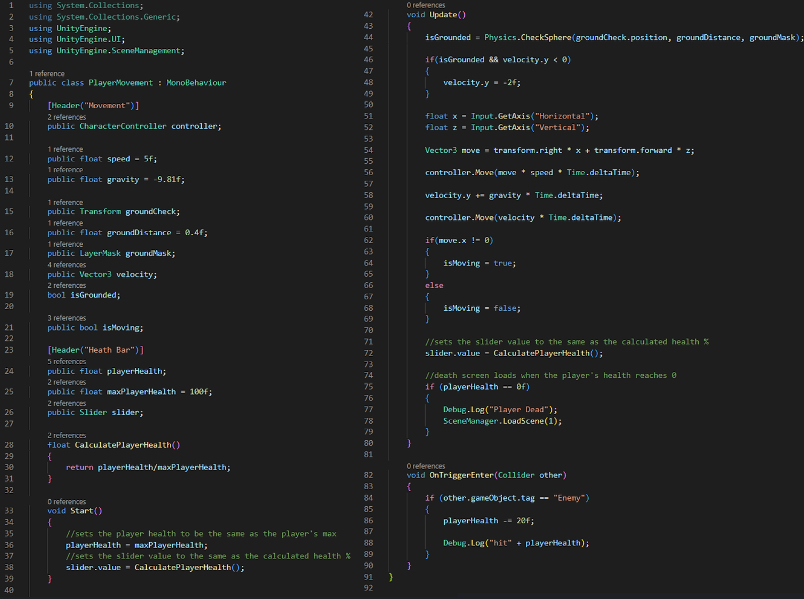
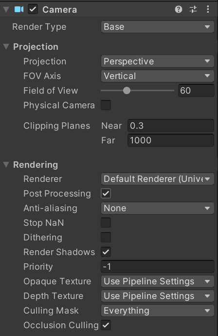

You're Too Delicious
Full Gameplay
The Process
A survival shooter where a bunch of enemies are coming at you in multiple directions and you have to shoot at them to survive. The base of my idea of this game jam was that it was a first-person shooter, where the enemies come at you from anywhere on the map and do damage to your health by colliding with you. And it is aquatic themed, the environment is in a fishbowl, you are shooting bubbles out of your gun for defence, against the enemies which are giant koi fish that know how delicious you are.
All of the model in this project I have gotten from the internet:
- Fishbowl
- Gun
- Koi
I animated the koi fish in my project myself prior for a previous project.
I began my project by starting to work on importing the environment and baking the Navmesh. I wanted to start on what I thought was the hardest mechanic I wanted to implement into this project, which was the enemy spawner. I could have either decide to instantiate the enemies from set points on the map or I could have them spawn randomly on the Navmesh area. I chose the latter.
Due to odd shape of my Navmesh (with it's round shape, uneven surface, and cut-outs where the
environment obstacles are) I had no clue how to implement this.
I had an idea to make the spawner points orbit around the centre of the environment, but the
enemies might end up spawning in the ground or in the environment obstacles. I followed the
following YouTube tutorial and made some code from it.
This is the main enemy spawner script that utilises object pooling to spawn enemies.

The way this enemy spawner script works is that it takes Navmesh Triangulation of the Navmesh
Area. This script accesses the Navmesh Triangulation Vertices which are the vertices in the
Navmesh area and stores these in an array.
This is the object pooling script,  that pools game objects that has this script attached,  which is an extension of this script that is also referenced in the object pooling script. 
The script first checks for the poolable object which in this case is the enemies. There is a
set limit that we can change to how many object will be in the pool in the "enemiesToSpawn"
attribute, I set this to 30.
An enemy spawns every 5 seconds due to the WaitForSeconds function. It then checks if the number
of spawned enemies are less than the enemies to spawn and runs the SpawnRandomEnemy() method.
SpawnRandomEnemy() then randomly spawns a random object from the object pool via the DoSpawnEnemy()
method. This method set generates a transform from 0 to the the max length from the
Triangulation.vertices list. Then it checks if this transform is on the Navmesh area and if it is,
it spawns the enemy at that point.
After the enemy is spawned, it runs this script which agent component is set to the player so that
the enemy moves towards the player to consume them.
 The code in the Update() function is so that when the enemy is moving towards the player, the enemy
is looking at the player.
The code in the Update() function is so that when the enemy is moving towards the player, the enemy
is looking at the player.
The first-person character controller is built upon the 3rd person character controller I made prior. I modified it by placing the camera on the "head" of the player and coded a script that made the movement of the mouse control the movement of the camera.

Aside from a first person character controller, another essential mechanic is the "shooter" part
of a first-person-shooter.
I coded two scripts for this mechanic: the gun script and the target script.
With these scripts, the player can shoot a raycast from their gun game object to a game object in
its ray and checks if the hit game object has the target script attached. In my project, only the
enemy game object has the target script attached.
If ray hits an enemy, the health of the enemy is taken away by the damage of the gun.
If the health of the enemy reaches 0, the enemy game object gets destroyed. This part of the code
works against the object pooling code as I can't reuse destroyed game object in the object pool so
I limited the amount of enemies that can spawn.
I also made it so that the health of the enemies show on a health bar hovering above them. This
heath bar is a slider UI game object that is attached to the enemy so that it follow the enemy as
it moves. The enemy's health bar is not active at when the enemy first spawns in and gets set to
active once the enemy takes damage from the player.
The player also has a health bar to display their health but on the HUD. This code is made the same way as the enemy's health bar UI code but the health bar is always set to active. 
Due the the theme of my project, I make my project in Unity URP(Universal Render Pipeline). Which has more options than Unity's standard render pipeline, but is less fiddly than Unity HDRP(High Definition Render Pipeline).
Post processing is built into URP so I utilised it in making the screen distortion effects to make
it look like the player is underwater. Before tinkering with post processing, I made the directional
light of the level to the colour cyan to start off with the underwater look of the scene.
I then made a Global volume in the hierarchy so that I could add post processing effects to the volume.
I used a global volume instead of using the other volumes as the post production effects will happen
throughout the whole level instead of just in certain set parts of the level.
Adding post process effects in the volume was as simple as pressing a button (Add Override at the
bottom) and scrolling through a list of effects and choosing some to add and modify, as long as you
know what they do.
Here are the effects that I choose and what they do:
- Chromatic Aberration - the splitting of the RGB at the edges of the screen
- Lens Distortion - the intensity of the fish-eye lens effect ("fish"-eye, matches the aquatic theme)
- Colour Adjustment - adding more cyan/blue to the scene, because underwater
- Bloom - having fringes of more cyan light to the scene
 But these effects are useless if the main camera can't even see them. So in the camera component in the main camera, post processing will have to be ticked under the rendering tab so that the camera can see the cool post processing effects.